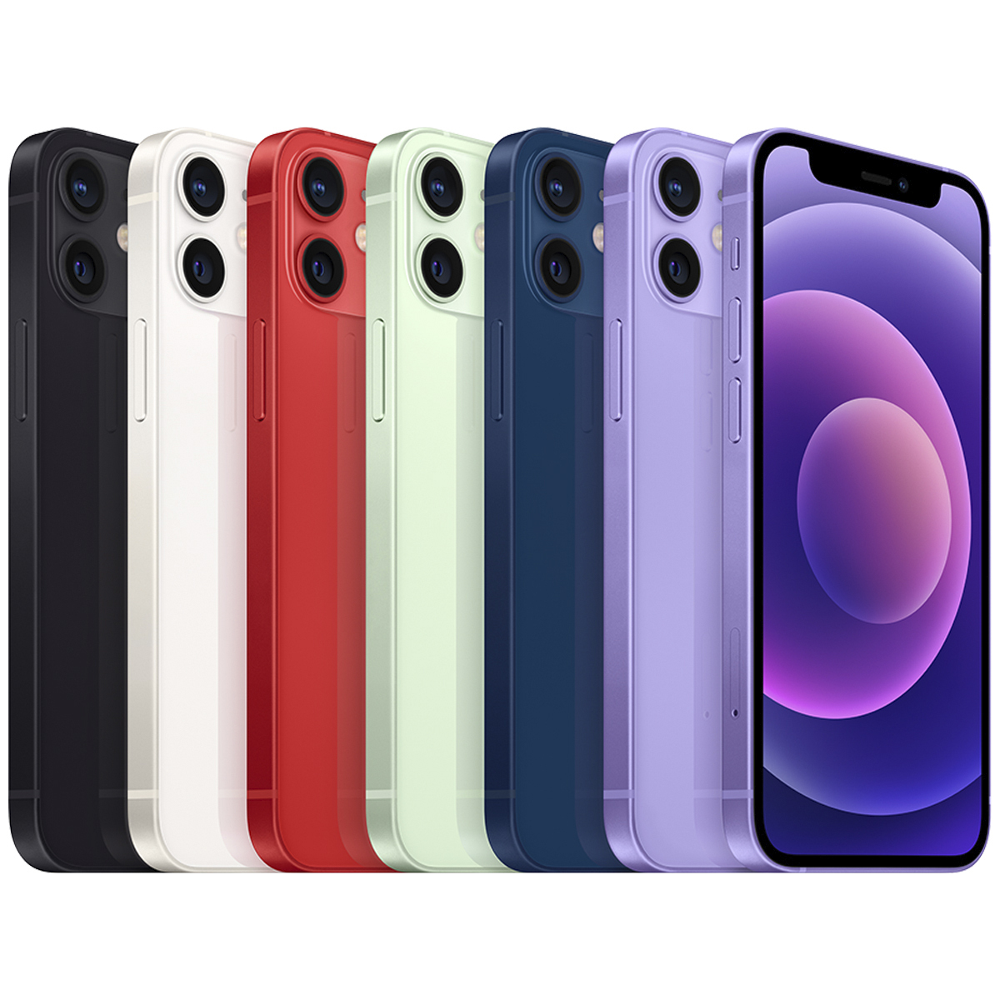

iPhone 12

iPhone 12, Apple'ın önde gelen akıllı telefonlarından biridir ve aşağıdaki temel özelliklere sahiptir:
- 6.1 inç Super Retina XDR ekran
- A14 Bionic işlemci
- 64GB, 128GB veya 256GB depolama seçenekleri
- Çift arka kamera sistemi (12 MP geniş ve ultra geniş)
- Face ID yüz tanıma
- 5G bağlantı desteği
- iOS işletim sistemi
Farklı renk seçenekleri ve daha fazla özellik için resmi Apple web sitesini ziyaret edebilirsiniz.
Daha Fazla Bilgi